NetScaler Gateway 11.1 - LDAP Authentication
Navigation
- LDAP Load Balancing
- LDAP Authentication Server :idea:
- LDAP Policy Expression
- Gateway Authentication Feedback and Global Licenses
- Multiple Active Directory Domains - UPN Method
- Multiple Active Directory Domains - AAA Groups Method
:idea: = Recently Updated
LDAP Load Balancing
Before you create an LDAP authentication policy, load balance the Domain Controllers. If you don't load balance your Domain Controllers, then when users enter an incorrect password, the user account will be prematurely locked out.
If you have multiple domains, create different Load Balancing Virtual Servers for each domain. These multiple Load Balancing Virtual Servers can share the same VIP if their port numbers are different. Or you can use a different VIP for each domain.
LDAP Authentication Server
To create the LDAP Authentication Server, do the following:
- On the left, expand Authentication and click Dashboard.
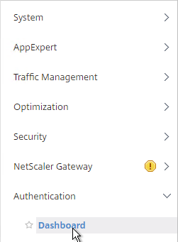
- On the right, click Add.
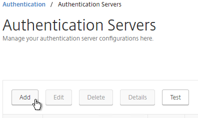
- In the Choose Server Type drop-down, select LDAP.
- Enter LDAP-Corp as the name. If you have multiple domains, you’ll need a separate LDAP Server per domain so make sure you include the domain name.
- Change the selection to Server IP. Enter the VIP of the load balancing vServer for LDAP.
- Change the Security Type to SSL.
- Enter 636 as the Port. Scroll down.
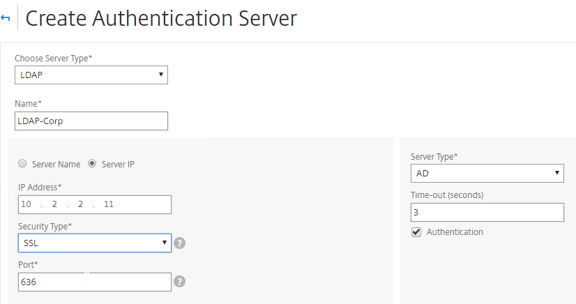
- Note: it's also possible to point the LDAP Server IP to a Global Catalog. See Citrix CTX200506 How to Change Password through NetScaler in a Multi-Domain Active Directory Forest Using LDAP Referral for configuration details. :idea:
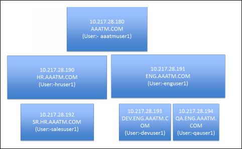
- In the Connection Settings section, in the Base DN field, enter your Active Directory DNS domain name in LDAP format.
- In the Administrator Bind DN field, enter the credentials of the LDAP bind account in userPrincipalName format. Domain\Username also works.
- Enter the Administrator password.
- Click Test Connection. NetScaler will attempt to login to the LDAP IP. Scroll down.
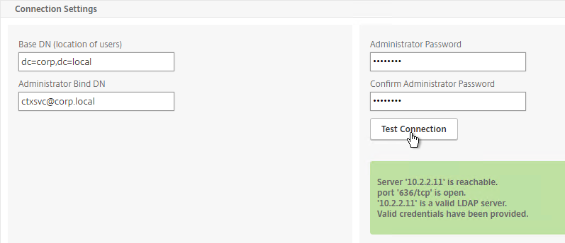
- In the Other Settings section, use the drop-down next to Server Logon Name Attribute, Group Attribute, and Sub Attribute Name to select the default fields for Active Directory.
- On the right, check the box next to Allow Password Change.
- Note: there is a checkbox for Validate LDAP Server Certificate. If you want to do this, see Citrix Discussions for instructions for loading the root certificate to /nsconfig/truststore.
-
If you want to restrict access to only members of a specific group, in the Search Filter field, enter memberOf=
. See the example below: memberOf=CN=CitrixRemote,OU=Citrix,DC=corp,DC=localYou can add :1.2.840.113556.1.4.1941: to the query so it searches through nested groups. Without this users will need to be direct members of the filtered group.
memberOf**:1.2.840.113556.1.4.1941:**=CN=CitrixRemote,OU=Citrix,DC=corp,DC=local Citrix CTX132802 How to Use the ldapsearch Utility on the NetScaler Gateway Enterprise Edition Appliance to Validate a Search Filter
- An easy way to get the full distinguished name of the group is through Active Directory Administrative Center. Double-click the group object and switch to the Extensions page. On the right, switch to the Attribute Editor tab.
- Or in Active Directory Users & Computers, enable Advanced view, browse to the object (don’t use Find), double-click the object, and switch to the Attribute Editor tab.
- Scroll down to distinguishedName, double-click it and then copy it to the clipboard.
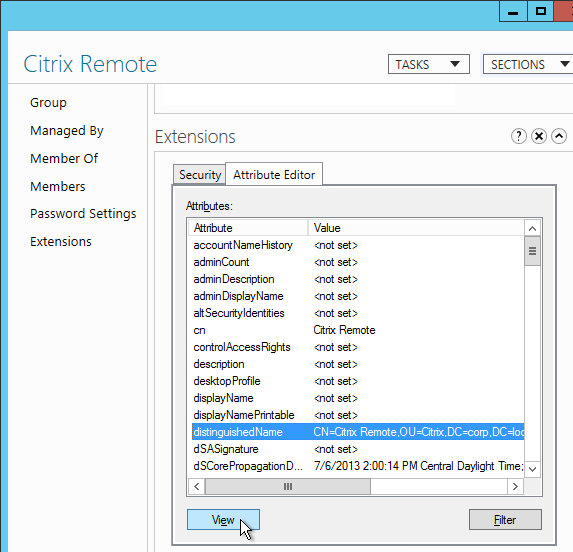
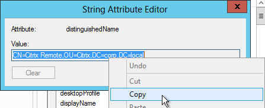
- Back on the NetScaler, in the Search Filter field, type in memberOf= and then paste the Distinguished Name right after the equals sign. Don’t worry about spaces.
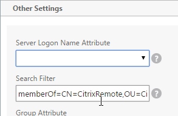
- Scroll down and click More.
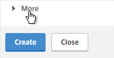
- For Nested Group Extraction, if desired, change the selection to Enabled.
- Set Group Name Identifier to samAccountName.
- Set Group Search Attribute to memberOf. Select << New >> first.
- Set Group Search Sub-Attribute to CN. Select << New >> first.
- For the Group Search Filter field, see CTX123795 Example of LDAP Nested Group Search Filter Syntax.
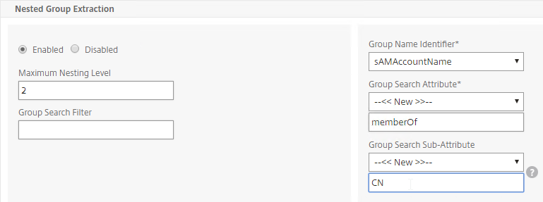
- Scroll down and click Create.
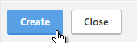
add authentication ldapAction Corp-Gateway -serverIP 10.2.2.210 -serverPort 636 -ldapBase "dc=corp,dc=local" -ldapBindDn "corp\\ctxsvc" -ldapBindDnPassword Passw0rd -ldapLoginName samaccountname -searchFilter "memberOf=CN=Citrix Remote,CN=Users,DC=corp,DC=local" -groupAttrName memberOf -subAttributeName CN -secType SSL -passwdChange ENABLED -
The status of the LDAP Server should be Up.
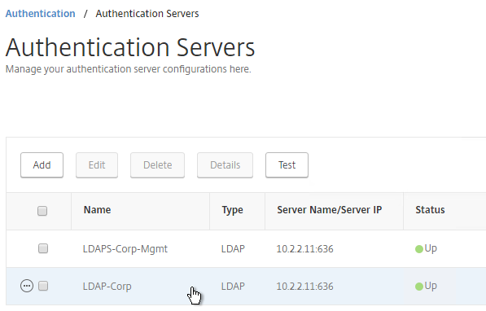
LDAP Policy Expression
The Authentication Dashboard doesn't allow you to create the LDAP Policy so you must create it elsewhere.
You can create the LDAP policy now. Or you can wait and create it later when you bind the LDAP Server to the NetScaler Gateway vServer.
To create it now:
- Go to NetScaler Gateway > Policies > Authentication > LDAP.
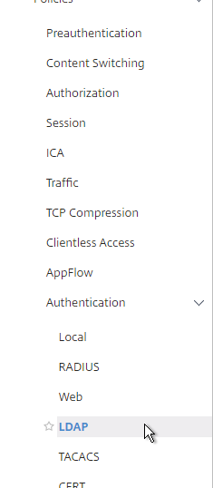
- On the right, in the Policies tab, click Add.
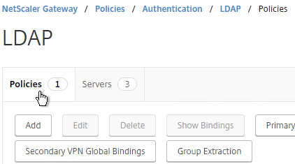
- Change the Server drop-down to the LDAP Server you created earlier.
- Give the LDAP Policy a name (one for each domain).
- In the Expression box, enter ns_true.
-
Click Create.
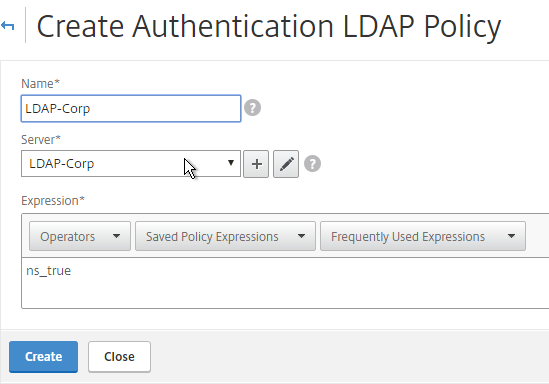
Gateway Authentication Feedback and Licenses
- On the left, under NetScaler Gateway, click Global Settings.
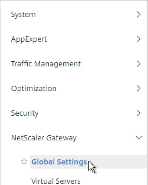
- On the right, in the right column, click Change authentication AAA settings.
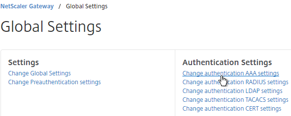
- If you are using Gateway features that require Gateway Universal licenses, then change the Maximum Number of Users to the number of Gateway Universal licenses you have installed on this appliance. This field has a default value of 5, and administrators frequently forget to change it, thus only allowing 5 users to connect.
-
If desired, check the box for Enable Enhanced Authentication Feedback. This feature provides a message to users if authentication fails. The message users receive include password errors, account disabled or locked, or the user is not found, to name a few. Click OK.
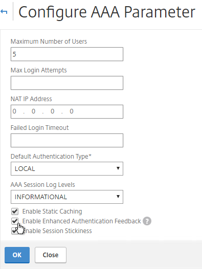
Next Step
- For two-factor, configure RADIUS Authentication
- Otherwise, Configure NetScaler Gateway Session Policies
Multiple Domains - UPN Method
To support multiple Active Directory domains on a NetScaler Gateway, you create multiple LDAP authentication policies, one for each Active Directory domain, and bind all of the LDAP policies to the NetScaler Gateway Virtual Server. When the user logs into NetScaler Gateway, only the username and password are entered. The NetScaler will then loop through each of the LDAP policies in priority order until it finds one that contains the entered username/password.
What if the same username is present in multiple domains? As NetScaler loops through the LDAP policies, as soon as it finds one with the specified username, it will try to authenticate with that particular LDAP policy. If the password doesn’t match the user account for the attempted domain then a failed logon attempt will be logged in that domain and NetScaler will try the next domain.
Unfortunately, the only way to enter a realm/domain name during user authentication is to require users to login using userPrincipalNames. To use userPrincipalName, set the LDAP Policy/Server with the Server Logon Name Attribute set to userPrincipalName.
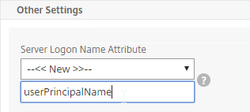
You can even do a combination of policies: some with samAccountName and some with userPrincipalName. The samAccountName policies would be searched in priority order and the userPrincipalName policies can be used to override the search order. Bind the userPrincipalName policies higher (lower priority number) than the samAccountName policies.
NetScaler 11.1 supports adding a domain name drop-down list to the logon page. Then use Cookie expressions in the auth policies and session policies. However, this probably doesn't work for Receivers. See CTX203873 How to Add Drop-Down Menu with Domain Names on Logon Page for NetScaler Gateway 11.0 64.x and later releases for details.

Another option for a domain drop-down is nFactor Authentication for Gateway. This also doesn't work with Receiver Self-service.
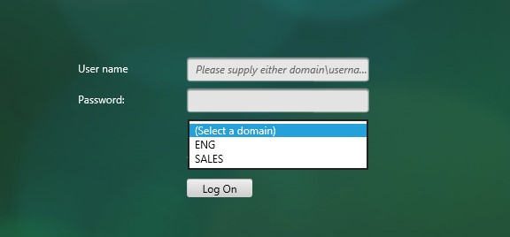
After authentication is complete, a Session Policy will be applied that has the StoreFront URL. The NetScaler Gateway will attempt to log into StoreFront using Single Sign-on so the user doesn’t have to login again. When logging into NetScaler Gateway, only two fields are required: username and password. However, when logging in to StoreFront, a third field is required: domain name. So how does NetScaler specify the domain name while logging in to StoreFront?
There are two methods of specifying the domain:
- AAA Group - Configure multiple session policies with unique Single Sign-on Domains. Inside the Session Policy is a field called Single Sign-on Domain for specifying the domain name. If there is only one Active Directory domain, then you can use the same Session Policy for all users. However, if there are multiple domains, then you would need multiple Session Policies, one for each Active Directory domain. But as the NetScaler loops through the LDAP policies during authentication, once a successful LDAP policy is found, you need a method of linking an LDAP policy with a Session Policy that has the corresponding SSO Domain. This is typically done using AAA groups. To use this method, see Multiple Domains - AAA Group Method.
- userPrincipalName - Alternatively, configure the LDAP policy/server to extract the user’s UPN, and then authenticate to StoreFront using UPN. This is the easiest method but some domains don’t have userPrincipalNames configured correctly.
The userPrincipalName method is detailed below:
- In each of your NetScaler LDAP policies/servers, in the Other Settings section, in the SSO Name Attribute field, enter userPrincipalName (select --<< New >>-- first). Make sure there are no spaces after this attribute name. NetScaler will use this pull this attribute from AD, and use it to Single Sign-on the user to StoreFront.
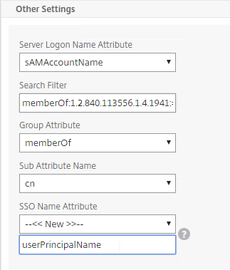
- In StoreFront Console, right-click the Store, and click Manage Authentication Methods.
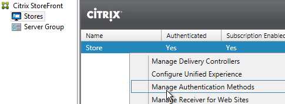
- On the right, click the gear icon, and then click Configure Trusted Domains.
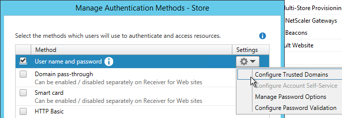
- In the Trusted domains box, select Any domain.
- Or add your domains in DNS format. The advantage of entering domain names is that you can select a default domain if internal users forget to enter a domain name during login. The DNS format is required for UPN logins (e.g. SSO from NetScaler Gateway).
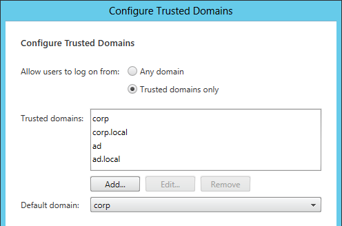
- On the NetScaler Gateway Virtual Server, bind LDAP authentication polices in priority order. It will search them in order until it finds a match.
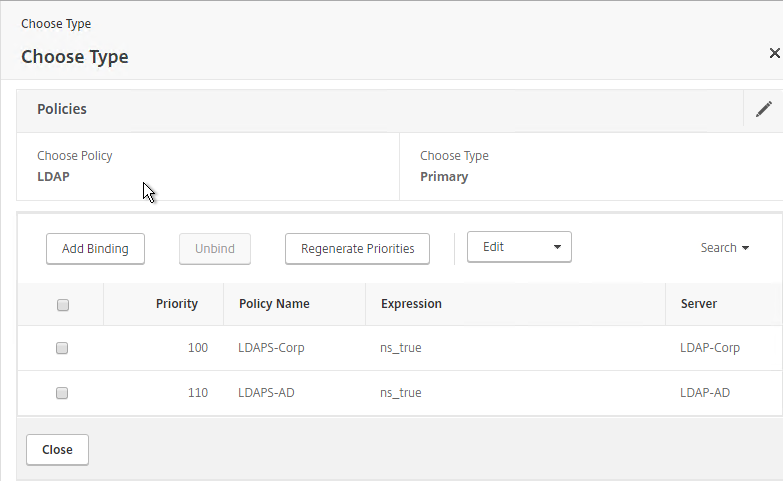
- In your Session Policies/Profiles, in the Published Applications tab, make sure Single Sign-on Domain is not configured. Since NetScaler is using the userPrincipalName there’s no need to specify a domain. If Single Sign-on Domain is configured then Single Sign-on authentication will fail.
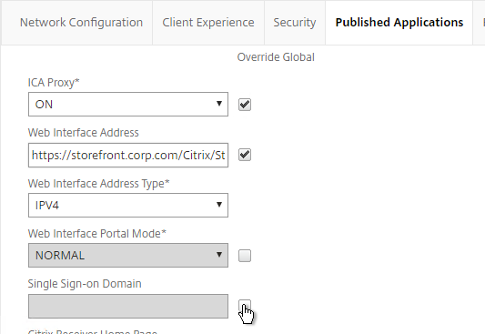
Multiple Domains - AAA Groups Method
Another method of specifying the domain name when performing Single Sign-on to StoreFront is to use a unique session policy/profile for each domain. Use AAA Groups to distinguish one domain from another.
- Go to NetScaler Gateway > Policies > Authentication > LDAP.
- On the right, switch to the Servers tab. Make sure all domains are in the list. Edit one of the domains.
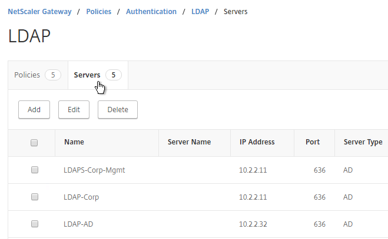
- Scroll down to the Other Settings section,
- In the Default Authentication Group field, enter a new, unique group name. Each domain has a different group name. Click OK.
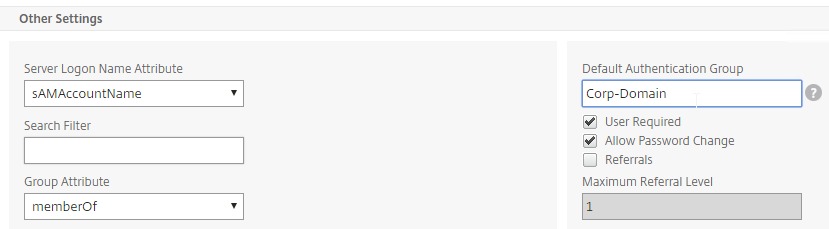
- Edit another domain and specify a new unique group name. Each domain has a different group name.
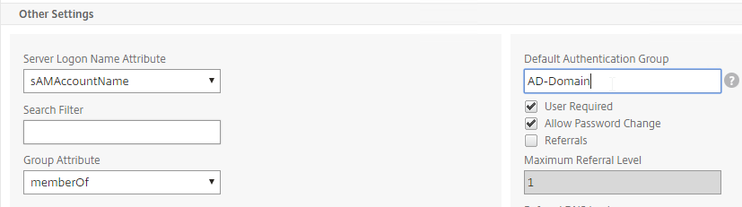
- Go to NetScaler Gateway > User Administration > AAA Groups.
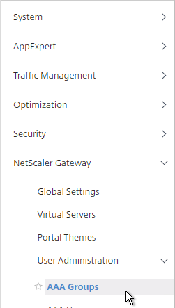
- On the right, click Add.
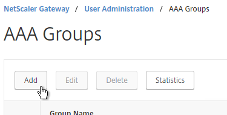
- Name the group so it exactly matches the group name you specified in the LDAP server. Click OK.
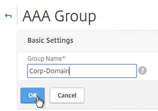
- On the right, in the Advanced Policies section, add the Policies section.
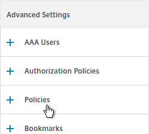
- On the left, in the Policies section, click the Plus icon.
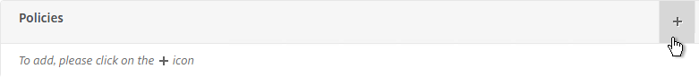
- Select Session, and click Continue.
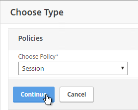
- Click the plus icon to create a new policy.
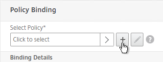
- Give it a name that indicates the domain. You will have a separate policy for each domain.
- Click the plus icon to create a new profile.
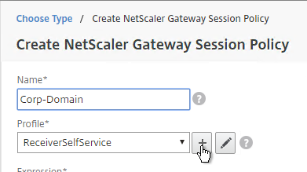
- Give the Profile a name that indicates the domain. You will have a separate profile for each domain.
- Switch to the Published Applications tab.
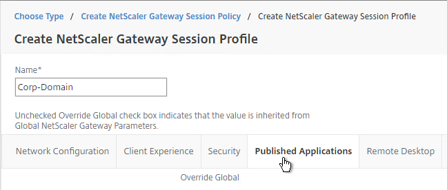
- Check the Override Global box next to Single Sign-on Domain. Enter the domain name that StoreFront is expecting. Click Create.
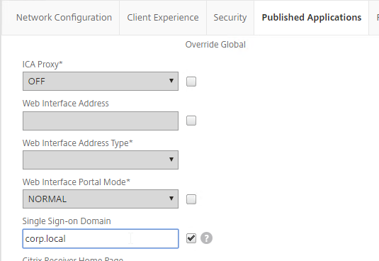
- Give the policy a ns_true expression, and click Create.
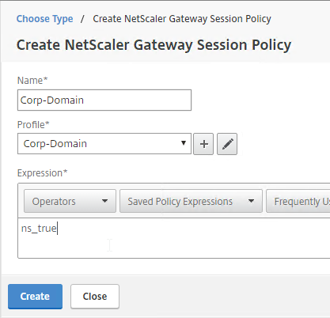
- In the Priority field, give it a number that is lower than any other Session Policy that has Single Sign-on Domain configured. Click OK.
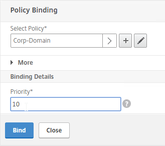
- Click Done.
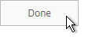
- Create another AAA Group.
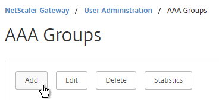
- Give it a name for the next domain.
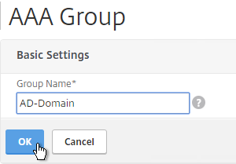
- Create another Session Policy for the next domain.
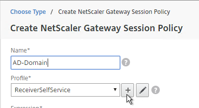
- Create another profile for the next domain. On the Published Applications tab, specify the domain name of the next domain.
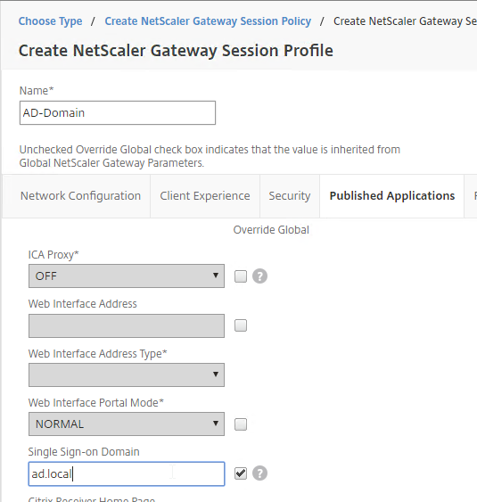
- Bind the new policy with a low Priority number.
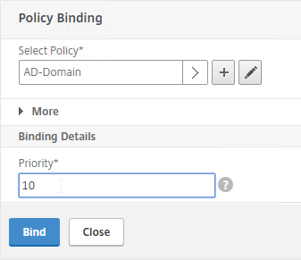
- When a user logs in, NetScaler loops through LDAP policies until one of them works. NetScaler adds the user to the Default Authentication Group specified in the LDAP Server. NetScaler finds a matching AAA Group and applies the Session Policy that has SSON Domain configured. Since the policy is bound with a low priority number, it overrides any other policy that also has SSON Domain configured.